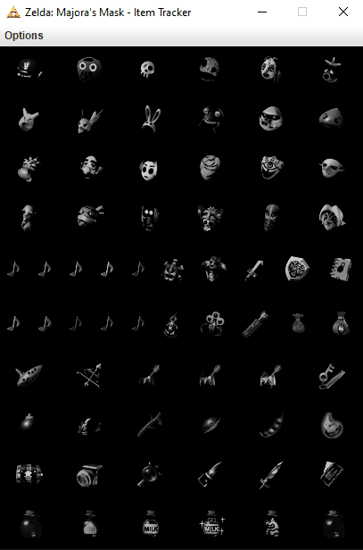
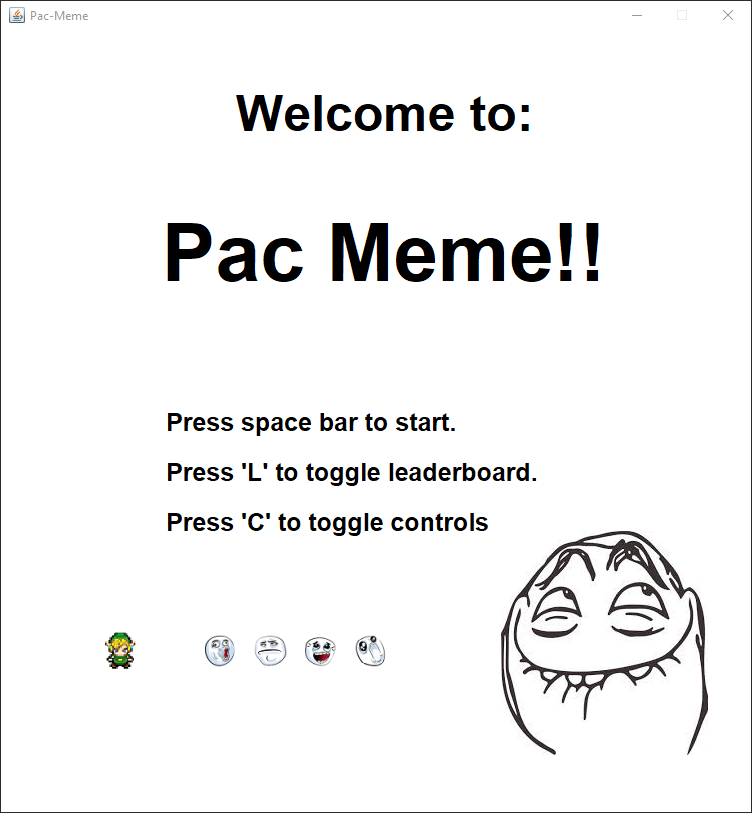
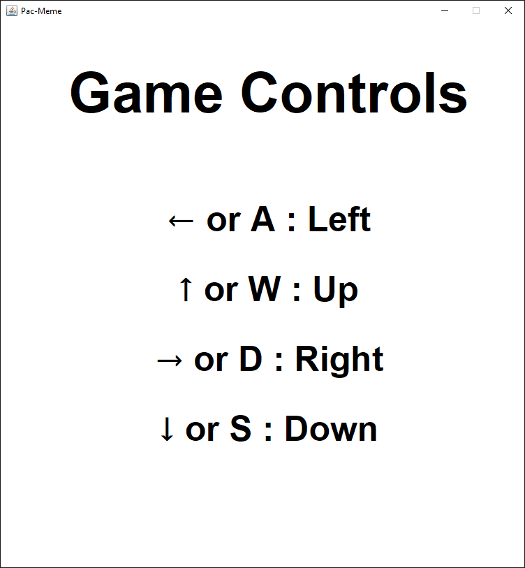
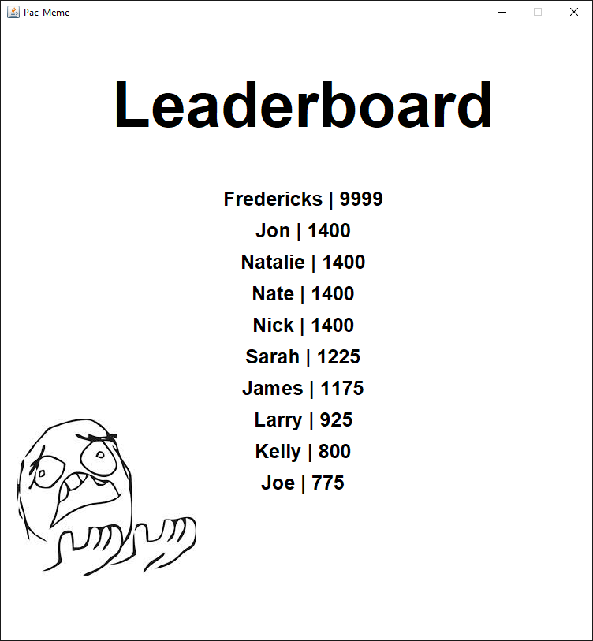
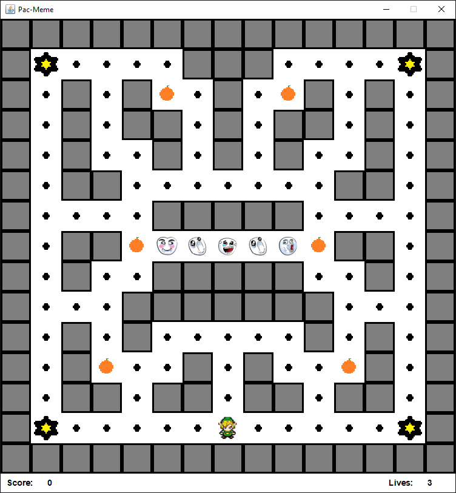
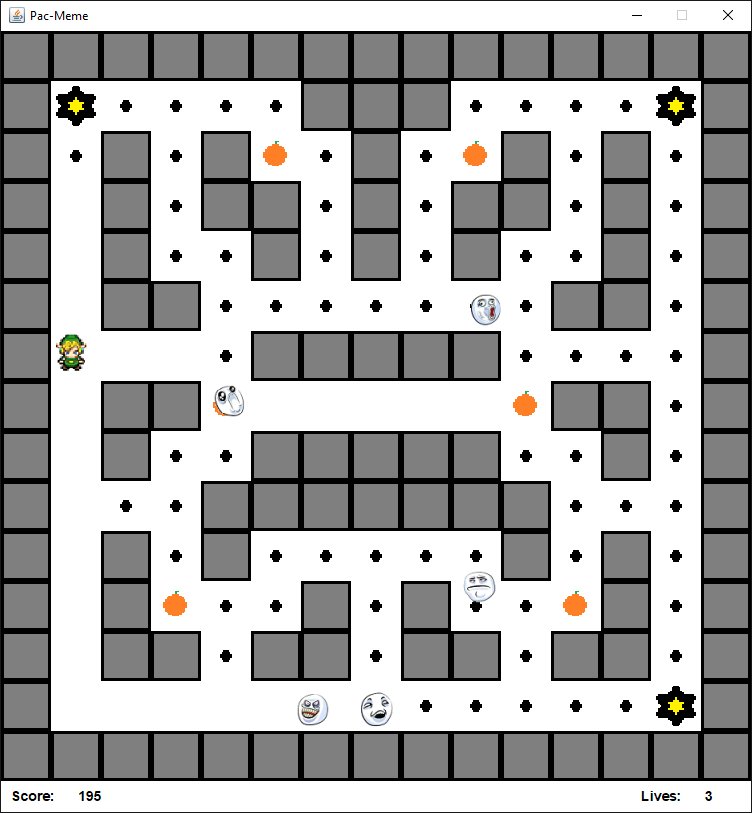
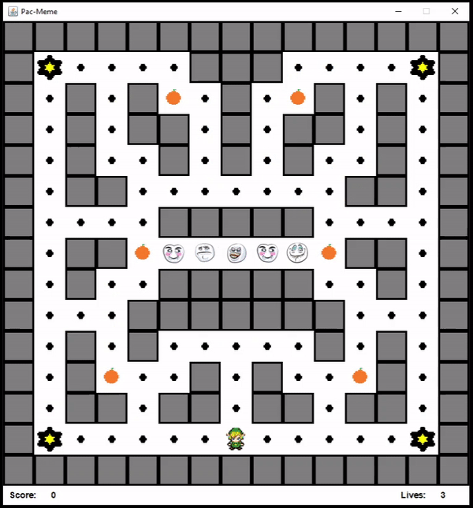

Education
- M.S. Applied Computer Science - Grand Valley State University (2022)
- B.A. Finance - Michigan State University (2016)
- Information Technology Minor - Michigan State University (2016)
Graduate Coursework
In Progress
- Fundamentals of Modern Computer Systems (CIS 501)
- Requirements Specification (CIS 612)
- Software Testing (CIS 613)
Completed
- Fundamentals of Software Practice (CIS 500)
- Software Design Methodologies (CIS 622)
- Systems Analysis & Design (CIS 641)
Technical Background
- Java (ongoing graduate-level coursework)
- Python (undergraduate-level coursework & online study resources)
- Git version control (ongoing graduate-level coursework)
Interests
- Expanding programming knowledge base
- Music (Piano & Guitar)
- Disc Golf
Projects
Disc Golf Data Visualization (2021)
View on GitHub
- Utilized Java GeoTools library to plot coordinates for all Michigan disc golf courses on a color-coded map and produced an animation illustrating the increasing pervasiveness of the sport over time.
- Programmatically generated series of images and stitched them together into a single .gif file.
- Leveraged Java and Selenium framework to scrape necessary course information from web.
GUI Item Tracker - The Legend of Zelda: Majora's Mask (2020)
View on GitHub
- Developed Java Swing GUI application allowing users to easily track and save the collection status of items encountered during a randomized playthrough of a popular game from the Zelda franchise.
- Incorporated Model View Controller (MVC) design pattern for separation of application logic.
Pac-Meme - Pac-Man Clone (2020)
View on GitHub
- Collaborated with three classmates to create a Java Pac-Man game incorporating a visual twist in the form of unique character sprites as part of a graduate-level systems analysis and design class.
- Created a software requirements specification (SRS) document to outline project requirements and trace UML development artifacts such as structural and functional models.
- Held weekly meetings and tracked overall deliverable progression via git version control.
Gallery
Disc Golf Data Visualization

GUI Item Tracker - The Legend of Zelda: Majora's Mask

Pac-Meme - Pac-Man Clone





